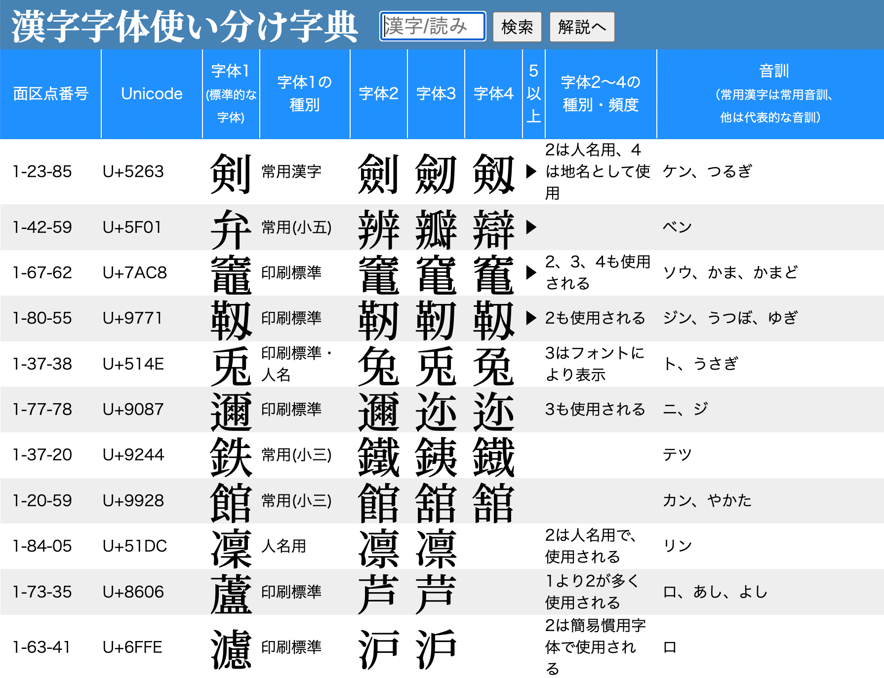
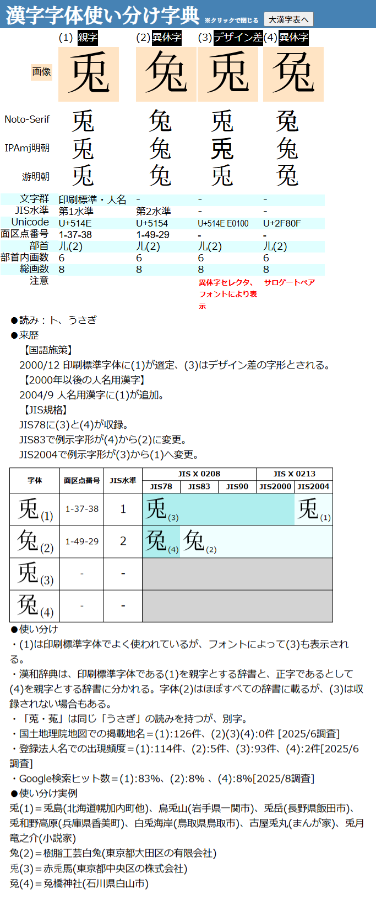

- 本webアプリの目的
-
本アプリは、日本語の文章を印刷物やインターネットで公開するときに、適切な漢字の字体を選ぶための助言ツールです。一般的な文章の執筆者・編集者・校正校閲者、また日本語を学習中の方などの利用を想定しています。
本アプリが対象とするのは現代日本の一般的な文章です。漢籍や古典文学など、専門性の高い文章にかかわる漢字使用については対象外です。また手書きのときの字体について指針となるものではありません。
収録した漢字は、「常用漢字表」「人名用漢字」「表外漢字字体表」に掲載された字に限っています。またそれぞれの漢字には、漢和辞典では多くの異体字が収録されていますが、そのすべてを載せているわけではありません（収録している漢字の範囲については「本webアプリの詳細」に記しています）。
- そもそも「字体を使い分ける」とはどういうことか？
-
一つの漢字には、さまざまな字体があります。ある漢字をどの字体で表記するべきかについては、さまざまな判断があり、その判断の根拠となる規範・基準・経緯があります。
「国や公的機関が決めた字体を使うべきだ」という意見、
「歴史と伝統に則った字体を使うべきだ」という意見、
「合理性・普遍性のあるルールに従った字体を使うべきだ｣という意見、
「とにかく多くの人が用いている字体を使うべきだ」という意見、
「そもそも、字体なんてそんなに気にしなくていい」という意見、
それぞれの主張にはどれも傾聴すべき根拠があり、批判を免れない弱点があると思われます。本アプリが目指すのは、「この字体を使うべきだ」という判断を示すことではなく、判断のための材料を提供することです。そのため、公的に標準とされている字体がどれかを明示し、現代日本での通時的な経緯を簡潔に説明しました。またどの字体が多く使われているかを調べ、使い分けの具体例を示しました。
- さらにそもそも、「字体」とはなにか？
-
「字体」を理解するには、似たような用語である「字体」「字形」「字種」の違いを理解するのが早道です。「常用漢字表」には上の3つの用語についての説明があります。これをもとに、なるべくシンプルにそれぞれの違いを整理しておきます。
字種…字の形や細部が違っても、文字として同じ意味を持ち、同じ読み方をされ、交換可能であると考えられる場合、それらの文字は「字種が同じである」とされます。多くの漢和辞典では、字種ごとに字体がまとめられて解説がされることがほとんどです。その場合、見出しとなる代表文字を「親字」と呼びます。
例＝「土」と「士」はよく似た字形ですが、第1画と第3画の長短が違います。前者は「つち」と読み、後者は「シ」と読む、まったく違う文字です。「字種が違う」と言えます。「蘆」と「芦」はまったく字形が違いますが、同じ文字として使用されているので「字種が同じ」と言えます。字体…点や画で構成された「文字の形の骨組み」が字体です。A社の明朝体とB社のゴシック体を比べると、同じ文字でも太さや傾きが違い、字形は異なります。しかし日本語を理解する人なら「同じ文字だ」とわかります。このとき、この二つの文字は同じ字体である、と言えます。字体の違いとならない程度の微少な違いは、常用漢字表では「デザイン差」と呼ばれ、JIS規格では「包摂」と呼ばれます。しかし、傾きの方向が違う、画の長さが違うなど、人によっては「デザイン差ではなく、字体の差だ」と判断することになるケースもあり、明確な区別ができない場合も少なくありません。
例＝「吉」と「𠮷」はよく似た字形ですが、第1画と第3画の長短が違います。「大吉」「吉祥」などの熟語にどちらを用いても違和感はありませんが、固有名詞として用いられるとき、「ヨシダさん」は自分の名前が「吉田」か「𠮷田」かを気にする人は少なくありません。この2つの字は「字種は同じだが、字体が違う」と言えるでしょう。字形…点や画で構成された文字の形のことです。手で書く文字は毎回少しずつ違います。だから手書きの文字は、同じ字であってもすべて「字形が違う」と言えます。印刷文字ならば同じ字形を繰り返し複製できますが、A社の明朝体の字とB社の明朝体の字を比べれば、太さ・傾き・長さや、時には字画の繋がりかたなどが違うこともあります。この場合も「字形は違う」と言えます。
例＝「」と「」は同じ「永」の文字ですが、第1画の長さと傾きが違います。「字種は同じ、字体も同じだが、字形が違う」と言えます。上の「永」の例では字形の差はごく僅かなものでした。しかし｢デザイン差」の範囲内であっても、見た目が違う、画数が違うなど、見る人によっては大きな違いだと感じる例もあります。名前に使われている場合、姓名判断に影響すると気にする人もいます。「まあ同じようなものでしょう？」と他人が気軽に口を出すことは慎むべきでしょう。
- 字体は統一するべきか？
-
そもそもひとつの文のなかで、あるいは一冊の本のなかで、字体は統一するべきなのでしょうか。
大前提として、字体を含めた文章の表記は、揃っているほうが美しく、信頼感が高まる、ということは言えるでしょう。「コンピューター」と「コンピュータ」が、「表す」と「表わす」が、「U.S.A.」と「USA」が理由もなく混ざった文章は、著者がしっかり読み返していないのではないか、校正がきちんとされていないのではないかと読者から疑われる恐れが高くなります。同様に、「謎」（しんにょうが2点）と「謎󠄀」（しんにょうが1点）が混じった文章もその信頼性が薄れる危険があります。だから一般論として、揃えられる字体は揃えるべきだ、とは言えるでしょう。
しかし、字体が混じることを極度にこだわる必要も、またないように思われます。固有名詞の場合はもちろんですが、何か理由があって、また何らかの効果を狙って字体を混用することはあるでしょう。１冊の本のなかで「大好き」「だいすき」「ダイスキ」と文脈に合わせて表記が変わることは不自然ではありません。同じように、字体を変えることでイメージを変える、伝えたいメッセージを変える試みは十分にありえるでしょう。
たとえば「竜」と「龍」では、前者からは西洋のドラゴンのイメージが浮かび、後者では中国の伝説的な聖獣が想起される…という人は少なくないでしょう。文章の意図に応じて異体字を使い分ける手法は十分あり得ます。ただその場合も、漠然と複数の字体を混在させるのではなく、異体字の出自や経緯を知ったうえで意図的に字体の混淆を行うのがよいのはもちろんです。
- どの字体を選ぶ？…基本のキ
-
前節で、字体の選定方針を4例挙げました。
その１「国や公的機関が決めた字体を使うべきだ」
その２「歴史と伝統に則った字体を使うべきだ」
その３「合理性・普遍性のあるルールに従った字体を使うべきだ｣
その４「とにかく多くの人が用いている字体を使うべきだ」
それぞれの方針について検討するための資料を提供することが、このwebの目的です。
その１「国や公的機関が決めた字体を使うべきだ」論
漢字の字体については、日本では3つの国家機関がその「基準」を定めています。文部科学省、法務省、経済産業省です。
文部科学省は、その外局である文化庁の所轄事務のひとつが「国語の改善およびその普及」で、「常用漢字」を管轄しています。最初の常用漢字表は、1946年に公布された「当用漢字」1850字をもとに、1981年に告示されました。総字数1945字でした。その後2010年には改定常用漢字表（総字数2136字）が告示され、現在にまで至る日本語の標準的な漢字使用の指針となっています。「常用漢字表」に示されている「通用書体」は、本webアプリでも標準的な字体としています。もう一つ、これまでの文部科学省管轄の国語施策のうち、漢字の字体に関わるものに「表外漢字字体表」があります。これは2000年（つまり最初の常用漢字表と改定常用漢字表のあいだ）に文化庁所轄の国語審議会が作成して文部大臣に答申したものです。その時点で常用漢字表と人名用漢字表に収録されていない漢字1022字について、標準的な字体である「印刷標準字体」を定めています。そのうち154字はのちに改定常用漢字表に収録されたので、本webアプリでは残りの868字を標準的な字体としています。
※「表外漢字字体表」は常用漢字表と違い、国語審議会が「答申」しただけで、内閣が「告示」してはおらず、官報にも掲載されていません。そのため、表外漢字字体表は公的なものではないと見なす立場もあります。法務省が管轄するのは「人名用漢字表」です。そもそもは1946年に当用漢字表が定められた後、1948年に改正された「戸籍法」で新生児の名前に用いられる漢字は当用漢字に限られるとされました。しかしその漢字数はあまりに少ないと多くの批判が集まり、内閣は1951年、「人名用漢字」として92字を告示し、子どもの名前に使える文字としました。その後人名用漢字は増えていきます。2000年に「表外漢字字体表」が答申された時点では285字が選定されていました。
この時点まで、「人名用漢字」には「準常用漢字」という一面があり、当初の人名用漢字の選定にあたっては国語審議会の諮問も経ていました。「表外漢字字体表」の前文には、「戸籍法施行規則で定めている人名用漢字については（中略）常用漢字に準じて扱うことが妥当であると判断した。」とあります。本webアプリでも、2000年以前に選定された「人名用漢字」については、その選定字体を標準的な字体としました。一方、2000年以後に選定された「人名用漢字」については、「標準的な字体」とするべき根拠に欠ける場合が多々あります。人名用漢字が増えていくなかでは、戸籍登録の際に子どもの名前に使いたい漢字が拒否された保護者が訴訟を起こし、後に裁判所の判決で確定するなどの経過を経た例もあり、必ずしも字体について専門家が十分に検討を重ねた結果ではないケースを含むのです。
たとえば「凜」と「凛」の2字は、ともに人名用漢字となっていますが、この2字は手書きの際にはほとんど字形が変わらない「限りなく同字形に近い異体字」です。古くから正字と見なされていた前者が1990年に人名用漢字となりますが、テレビドラマの主人公名となった後者を名付けに使いたい親からの裁判を経て、2004年に後者も人名用漢字となりました。本webアプリでは「どちらがより正統的か」という議論には立ち入らず、2000年以前に人名用漢字となった前者を親字としています。ちなみに、俳優の「片岡凜」さんは「凜」、「菊地凛子」さんは「凛」です。
経済産業省は、産業標準化法に基づき日本産業規格（JIS規格）を制定しており、その中の「情報」分野で漢字を含む文字の標準規格を定めています。JIS規格で定められた文字の規格には、JIS X 0208（1978年制定、1983年、1990年改正）とJIS X 0213（2000年制定、2004年改正）があります。
※以上はJIS規格の成立過程を字体選定の推移に限ってシンプルにまとめたもので、実際にはもっと複雑な経緯がありました。ここでは省略します。1978年のJIS規格票の制定によって、初めて日本語の文字は固有の文字コードを与えられ、容易に情報交換=コンピュータ処理が行えるようになりました。これは画期的なことでした。しかしその後のJIS規格の改訂の際には、必ずしも十分な配慮を経ない判断や処置がありました。改定にあたっては新しい字体が追加されただけではなく、規格票に掲載されている字体（「例示字体」と呼びます）が変わったり、入れ替わったりといった事態が発生しました。
JIS規格票では、「個々の図形文字の具体的字形設計などは、この規格の適用範囲とはしない」旨が記されていますが、現実には書体設計者やコンピュータ開発者はJIS規格の例示字体を基にして字形を設計し、文字コードに配置します。例示字形が変わることは、同じ文字コードに対して違う字形が表示されてしまうことを意味します。それは「違う字形」を超え「違う字体」となることも多くあります。さまざまな混乱が生じ、最後のJIS改正が行われてから20年が経つ現在にまで、混乱の余波は及んでいます。
最初のJIS78には6349字、最後のJIS2004では10050字の漢字が収録されています。その後、JISの漢字規格は国際的な文字コード規格であるUnicodeに統合され、中国、台湾など各国の漢字を含むさまざまな言語が表示できるようになりました。Unicodeは、現在はJIS規格に技術的内容が同一のJIS X 0221として規定されており、今後のJIS規格はUnicodeと一致した形で進んでいくことになります。JIS規格の改訂によって漢字の字体に関して新たな混乱が生じることはもはやないと思われます。
その２「歴史と伝統に則った字体を使うべきだ」論
第二次世界大戦後、日本の国語政策は大きな変革を経ました。漢字の字体については、1946年告示の「当用漢字表」と、その3年後に告示された「当用漢字字体表」の制定がエポックメーキングでした。漢字の使用文字数の制限や字体整理の試みは戦前から何度も提案されてきましたが、正式に確定したのはこれが初めてでした。1850字の漢字の字体が公式に制定されましたが、そのうち約500字はそれまで一般的だったものとは違う字体でした。基本的にはより画数の少ない、読み書きしやすい字体となり、その字体は「新字体」と呼ばれます。
字体について「歴史と伝統」を重視する立場からは、新字体ではなく、それまで標準的とされてきた字体＝「旧字体」を重視することになるでしょう。 常用漢字表では、一部の漢字について「いわゆる康熙字典体」として、当用漢字表以前に標準的とされて学校教育などで用いられてきた旧字体が掲出されています。康熙字典は18世紀初頭に清朝で編纂された漢字辞典で、そこで採用された字体は、中国でも日本でも標準的な字体として長く認められてきました。「いわゆる康熙字典体」は、おおむね「歴史と伝統に則った」字体と考えてよいでしょう。ただし「いわゆる康熙字典体」の中には、実際には康熙字典では使われていない字体も含まれる（そのため「いわゆる」と付けられています）など、すべてが正統的な字体とは言い切れません。
また複数の旧字体を新字体1文字に整理した例も多く、機械的に「新字体を旧字体に戻す」作業を行うのは危険です。
さらに「いわゆる康熙字典体」が示されていない字体でも、それまでは違う字形が多く用いられていた字種も少なくありません。そもそも戦前の漢字の字体表示は多種多様で、「旧字体が使われていた」とひと言で言い切ることはできません。なお、そもそも古代中国から始まる漢字の歴史のなかで、字形がどのように変遷してきたのか、どの字形が最も「正統的」なものなのかを論ずることは、もはや独立した学問の領域です。本webアプリが扱えるようなものではなく、「来歴」「使い分け」などでも言及していません。
本webアプリでは、「いわゆる康熙字典体」と記された字体は、「文字群」欄に「康熙字典体」と記しています。以上の説明を踏まえ、漢和辞典などを調査したうえで字体選定を行なうことをお勧めします。その３「合理性・普遍性のあるルールに従った字体を使うべきだ｣論
当用漢字字体表で「新字体」を策定する際には、字画の整理が幅広く行われました。その主旨は「漢字の読み書きを平易にし正確にすること」にあり、整理方針にはある程度の合理性がありました。また同じ部首は原則として同じ形に略すなど、ある程度の普遍性もありました。当用漢字表の後継である常用漢字表でも同様の字画の整理が行われました。
当用漢字・常用漢字に選ばれなかった漢字には、当然ながら字体の整理は行われません。しかし、そのような字（表外字）についても同じルールを適用して字体を整理しようという動きが、当用漢字制定直後から1980年代まで続きました。このように表外字に字画整理を行なった漢字を「拡張新字体」と呼びます。拡張新字体を特に推し進めようとしたのは一部の新聞社です。朝日新聞社は独自の拡張新字体を多く使い、「朝日字体」「朝日文字」と呼ばれました。
しかし拡張新字体は、1990年以後あまり使われなっていきます。大きな理由として、コンピュータの普及により文字を手書きする機会が激減し、字画の煩雑さが問題になる場面が少なくなったことが挙げられます。2000年の「表外漢字字体表」では、標準的な字体である「印刷標準字体」には多くの場合康熙字典体に近い字体が選ばれ、拡張新字体にあたる「簡易慣用字体」は22字に限られました。2007年には朝日新聞社も「朝日字体」の使用をやめることになりました。
「合理性・普遍性のあるルールに従った字体」として拡張新字体を使用する方針を採る際には、これは現在ではマイナーな流儀になっていることは理解する必要があるでしょう。また整理方針について「ある程度の合理性とある程度の普遍性」と述べたように、あまり合理的とは思えない判断や、普遍性に欠ける字画整理も少なからず見受けられることにも注意が必要です。
例：1949年、「瀧」は当用漢字表で新字体「滝」と整理されました。1981年、「龍」は常用漢字表で新字体「竜」となりました。この2例から、字画「龍」は「竜」とするのがルールだと類推されます。しかし2010年、改正常用漢字表に採用されたのは「籠」であり、「篭」ではありませんでした。「篭」は現在でも一部の地名に使われていますが、一般的とはなっていません。そして「朧」を「月に竜」とする字体は、朝日字体を含め、拡張新字体にも存在しません。＜字画「龍」は「竜」とする＞は、普遍的なルールではなかったのです。その４「とにかく多くの人が用いている字体を使うべきだ」論
実際にどの字体が使われているのかは、本webアプリの漢字別表の「使い分け」欄に調査結果をまとめています（ 「使い分け」についての詳しい説明は「本webアプリの詳細」にあります）。ほとんどの場合は「標準的な字体」とした字体が多く使われているのですが、そうでない字体（表の(1)ではない字体）が広く使われている文字もいくつかあります。そのような字には、「注意」欄に「頻用字体※」と記しています。
※これは一般的な用語ではなく、本webアプリの造語です。具体的には、文化庁の「漢字出現頻度数調査（第4回） 」、国土地理院地図の表記、国税庁の「法人番号公表サイト」、google検索実態調査の4要素のうち、どれか1つ以上で「標準的な字体」よりも高頻度の使用が確認された字体を「頻用字体」としています。ただし、字体の出現数が総計10に満たない場合はカウントしません。
また、国語辞書では標準的な字体以外の字体が親字となっている場合があります。3大中型国語辞典のひとつ「大辞泉」第二版では、26字種が異体字を親字としており、その全字を「使い分け」欄に記載しています。
なお、「頻用字体」の基準は4要素の「どれか1つ以上」での高頻度使用であり、標準的な字体のほうが多く使われている局面もあります。字体の選定にあたっては十分な検討をお勧めします - どの字体を選ぶ？…著者の場合
-
もしあなたが｢著者」として文章を書くならば、つまり自分の文章について第三者からの共感も非難も受け入れる覚悟と責任を持つ立場で文章を書くなら、100%自分の好みで字体を選ベばよいでしょう。誰が何と言おうと、あなたにはその権利があります。
しかし、言語というものはどこまでも社会的なものです。自分の文章が他人に理解され得るものなのか、他人に誤解なく読んでもらえるものなのか、考えずに文を書く人はまずいないでしょう。そのためには、字体の選定も大事になってきます。一般的には「標準的な字体」を選ぶのが無難ですが、固有名詞については、その人や土地が持つ字体を選ぶのもいいでしょう。そして、必ずしも文部科学省や通商産業省のルールに縛られず、好きな字体を選んでいいのでしょう。「藝術」と書いて文豪気分を味わうのもよし、「惡の巣窟」と書いておどろおどろしさを演出するのもよし、です。ただし、子どもや外国人に理解されない場合があること、検索でひっかかりにくくなることがあることは覚悟する必要がありますし、逆に意図的に多くの人の理解を拒絶したくて異体字を選ぶ場合もあるでしょう。すべては著者の自由です。
しかし、「ある漢字は常用漢字の通用字体を使う」「別の漢字は旧字体を使う」「また別の漢字は拡張新字体を使う」のなら、さてこの著者はどんなルールに従って字体を選定しているのだろうかと、疑問を寄せられるかもしれません。｢私は自分のマイルールで文章を書いている」、それももちろん回答のひとつでしょう。しかし、他人には理解しがたいマイルールを振り回す人は、あまり好感度が高くないことは覚悟しなくてはなりません。いずれにせよ、著者は字体の選定という権利を持っていること、これは誰から咎められることもありません。 - どの字体を選ぶ？…編集者・校閲者の場合
-
編集者や校閲者は、さまざまな筆者の原稿を取り扱い、読者に届ける橋渡しをする整理係です。そのため筆者とは違う目線で字体選定に臨む必要があります。
(1)統一性。一冊の本、ひとつのサイトのなかでは、同じ漢字は同じ字体とするのが、テキストの完成度を高めることにつながります。
(2)読みやすさ。慣れ親しんだ字体は読みやすく、あまり目にしない字体は読み辛い…これは当然のことです。実質的に字体の「使い分け」がされているケースもいくつかあります。たとえば「蘆」と「芦」は同じ字種の異体字の関係にあり、本webアプリの基準では「蘆」が標準的な字体になります。しかし、箱根の湖を「蘆ノ湖」と書くケースはあまり想像できません。一方で、文学者の「徳冨蘆花」を「徳富芦花」と書くことも少ないでしょう。用途にあわせた「頻用字体」の使用を検討することは有益です。
(3)著者の意向をどう判断するのか、また固有名詞の場合、本人がどの字体で表記されることを希望しているのか。これらの要素は無視できませんが、著者と本人の意向を100%優先とすればそれで済むことではありません。著者の意向は、時には変わりやすく、時には統一性に欠け、時には熟考を経ず即断で決められることもあります。編集者や校閲者は、場合によっては著者と深く話し合って字体選定に関わる必要があるでしょう。「本人」問題はもっと複雑な場合があります。名前は重要な個人情報であって、それが安易に変更されたり標準化されたりすることはあってはならない……その理念はもっともですが、現実には明治期に戸籍が整備されて、すべての日本人の姓名が国家によって登録されることになった際、「漢字の字体」についての認識は、現在とはまったく異なるものでした。字体の標準化が必要という認識はなく、多くの異体字がこのときに生まれたと言われています。この時には申請者や登録係の誤記、字体の混同なども生じましたが、しかしいったん戸籍として固定されたことにより、その字体に固執する場合もあれば変更を希望する場合もあり…と事態は複雑化していきました。
たとえば、人名として多くの異体字があることで知られる「辺」には、31種におよぶ異体字がUnicodeに登録されています（単独コードで2字、異体字セレクタのMoji_Johoコレクションで29字）。戸籍登録や契約書締結のときにそれらの字体を使い分けする必要はあるとして、しかし一般的な書籍でもそのすべての異体字を表記し分けることができるのか、そしてそれは必要なことなのか、大いに疑問です。現在、多くの新聞は「原則として異体字は使用しない」としており、「龍、峯」は使わず、「竜、峰」を使います。一般の書籍からすると「乱暴」なルールですが、広く多くの読者に読みやすい紙面を提供するという原理原則からは妥当性はあります。(4)過去のテキストを扱うとき。特に明治以前のテキストを掲載する際には、元の字体を用いるか、現代の標準的な字体を用いるかが悩みどころです。簡単ですべてに通じる判定方法はありませんが、「必要以上に執筆時代の字体にこだわらない」ことが肝かと考えます。時代を超えて文章が読み継がれていくときに、もっとも重要なのはその文字の記号性であり、文字が運ぶ意味です。とすれば、現代に通じる字体を選ぶことが基本ではないでしょうか。
実は漢字以上に字体の変遷とバラエティが豊かなのが「平仮名」です。明治時代以前の多種多様な変体仮名をすらすらと読みこなせる人は多くはないでしょう。仮名を整理して現代のかなにすることと、漢字を整理して現代の字体に整理することの意味に、大きな違いはありません。 - どの字体を選ぶ？…デザイナーの場合
-
「美しい、読みやすい字体」を選びたいと考えるのは、デザインを司る立場であれば当然です。美しく読みやすい書体は、どんな人にも通じるかどうかはともかく、確かにあるでしょう。しかし、それ以上に重要なのは「著者の意図通りの字体を用いる」ことです。だから、2025年の現在においては、著者の意図を外れた字体を表示してしまうリスクのある書体、すなわちJIS90フォントは気をつけなければなりません。本webアプリの個別漢字表の「注意」欄に「フォントにより表示」とあるときは、十分な注意をお払いください。そのうえで、時には字体…あるいは字形レベルでの不統一への挑戦は、敢えておこなう価値があるかもしれません。
- どの字体を選ぶ？…フォント・アプリベンダーへの要望
-
フォントメーカーさんに対しては、まずは何よりも、意図した通りの字体を再現するために、すべてのフォントについてJIS2004対応版を揃えることを願います。
またアプリについては、サロゲートペア、異体字セレクタへの十分な対応を期待します。
たとえばMicrosoft Excelでは、異体字セレクタでの表示はできるものの、セルの幅によっては正しく表示されないバグがあります。unicode()関数、unichar()関数で異体字セレクタやサロゲートペアを扱えることにも期待します。
各種アプリ全般についての要望では、検索の際、デフォルトでは「異体字セレクタを無視した検索」を、オプションで「異体字セレクタを考慮した検索」を選べるようにしてほしいものです。異体字への対応として、InDesignやIllustratorの代替文字セレクターは便利に使われてきましたが、今となっては汎用性に欠けます。異体字セレクタの使用が標準的になってほしいものです。データペースアプリ Filemakerはそもそも異体字セレクタに対応していません。
このような混乱した状況が早い時期に解消されることを強く願います。「異体字」には、別の文字コードをもつもの・異体字セレクタで表示するもの・サロゲートペアで表示するものがあり、コンピュータ上の扱いはシンプルではありません。しかし、検索やソートの際に、字種ごとにまとめて処理できる汎用のライブラリがあれば、さまざまな業種や使用環境で役立つのではないでしょうか。
- どの字体を選ぶ？…拝啓新聞社様
-
新聞社は近代社会における「社会の公器」であり、国語政策についてもさまざまな主張を持ち、その意思を行使する力を持っています。その中では、多くの国民の利益となる改革案をいくつも提案してきており、国の国語政策の暴走や迷走を正す役割を果たしてきました。その功績については大いに称えられるべきです。しかし、現在いくつかの新聞社が方針としている漢字の字体選定については、ちょっと意見を申し上げたく思います。
現時点で、漢字の字体選定方針について新聞社はおおまかに２グループに分けられます。一つは朝日新聞・中日（東京）新聞・産経新聞などの「標準字体」グループ。もう一つは読売新聞・日本経済新聞などの「３部首許容字体」グループ。問題は後者のグループです。このグループの新聞では、「迂・飴・祀」を「迂󠄀・飴󠄀・祀󠄁」と表示します。この方針には、過去の時代、確かに意義と理由がありました。しかし、2025年の現在、本当に意味があるのでしょうか。4つの疑問があります。
(1)まず、読者が記事を読んで同じ字体を使おうとしても、簡単には使えない場合があることです。大手新聞社は自社のオリジナルの入力→データ処理→印刷システムを組んで、テキスト入力から印刷まで対応することができます。しかし一般的な新聞読者はそういうわけにはいきません。手書きではなくパソコンやスマホで文字入力することが一般的である現代において、新聞記事の表示通りの字体を用いようとすると、実はかなり大変なことになってしまいます。
例：「逍」のしんにょうを1点にした形。この字はJIS規格にもUnicodeの標準規格にもありません。新聞社は自社独自のシステムで容易に入力し、印刷することができますが、この字形を一般人が使おうとすると、「IPAmj明朝」などのやや特殊な書体を用意して、「異体字セレクタ」というやや特殊な方法で文字入力し、これらに対応したプリンタから出力する必要があるのです。インターネットに書き込む、メールで送信するなどの場合は、更に困難度はあがります。ほとんどの人は試みることもないのではないでしょうか。読者が入力できない・使えない字体を敢えて新聞紙面に載せることに固執するのは、読者のためになっているのでしょうか。(2)現在各新聞社もインターネットでニュースを活発に発信していて、大きな事業のひとつとなっているのは誰もが知るところです。しかし、これらの新聞社が運営しているニュースサイトでは、同じ記事が標準字体で流通しているのです。「ネットだから仕方がない」は逃げ道になりません。異体字セレクタを使ったり画像の埋め込みを行えば、ネットでも新聞社の主張する字体を表示することは決して不可能ではありません。その努力はせず、しかし紙媒体ではちがう字体を自社ルールとして使用する。さて、ここにどのような道理があるのでしょうか。「紙は大切だけれど、ネットは適当でいいから」？ ネット媒体の読者は＜適当にあしらってもいい読者＞なのでしょうか？ それとも「字体が多少変わろうが、読者は気にしないから」？ だったら紙媒体についても、一般的な字体にしてはどうでしょう。
(3)はっきり言って、読みにくい字があることです。「しんにょうの点の数」と「食へんの形」はいいとしましょう。通用字体と許容字体の差は見た目小さく、読むのに困難はありません。しかし「示偏」は通用字体と許容字体の字形が違いすぎて、明らかに読みにくいのです。「祭祀」はサイシと読めても、「祭祀󠄁」は読めなくないですか？ 「お祓󠄂い」って、オハライと読めますか？ 「お祓い」じゃないですか？ この「簡単な字体」は読者のためになっているのでしょうか？
(4)おまけにもう一つ。そもそも「３部首許容」が国の政策に取り入れられたのは、表外漢字字体表が答申される際の新聞業界からの申し入れがきっかけでした。 その時代、既に金属活字の時代ではなくなっていたにせよ、新聞社の組版システムを変更するのが大変な作業だったろうことは容易に想像がつきます。これまで維持してきた簡略な字体を使い続けたい意向は十分理解できます。しかし、InDesignやIllustratorといった高機能な組版ソフトが普通に購入･使用できるようになった現在、「読みにくく、書く必要がなく、組版で再現しにくい」字体にこだわる理由を、多くの人が納得できるように説明できるのでしょうか？ 「3部首許容字体」の是非について、2つに分けて考えてみてはどうでしょう。一つは、しんにょうや食へんのような「どちらの字体でも読める」字をどうするか、です。こられの字体は、読むにも書くにもどちらでも苦労はほぼ変わりません。であれば、どちらにするか迷うことにエネルギーを使うことがもったいないから、標準的な字体にすればよいのではないか。
もう一つ、しめすへんのような「字体がかなり違って見える」字。これは、普通に読みやすい字体、より一般的な標準的な字体にすればよい。…のではないか。とすれば、結論は一つのように思います。「3部首許容字体」はそろそろ終わりにしませんか。
※なお、朝日新聞社は前述の通り2007年に「朝日字体」の使用をやめ、標準的な字体を使うようになりましたが、「辻」だけは一点しんにょうの「辻󠄀」を使い続けています。「辻󠄀」は確かに頻用される字体ですが、国土地理院地図では「辻」が708件で「辻󠄀」は0件であるなど、必ずしも優勢を占めているわけではありません。中日（東京）新聞、産経新聞は「辻」を使っています。 - 「全漢字表」の見方
-

本webアプリを開いたときに表示される大きな表です。
左から順に、JIS規格の面区点番号、
Unicodeのコードポイント、
「標準的な字体」として字種ごとの代表字＝親字を載せています。
「種別」には親字が常用漢字か、印刷標準字体か、人名用漢字かを示し、小学校で学ぶ漢字は配当学年をカッコ内に示しました。
その右には異体字を3字まで載せました。4字以上の異体字を収録している場合には「▶」マークが示され、「各漢字ごとの表」ですべての異体字が見えます。
「字体2〜4の説明」は、それぞれの異体字がどのような位置づけにあるかを簡単に示しました。詳しくは「各漢字ごとの表」を確認してください。
「音訓」欄の漢字の読みは、常用漢字は「常用漢字表」に載っているすべての読みを入れ、それ以外の漢字は代表的な音訓を入れています。各漢字の詳しい情報を知りたいときは、その漢字が含まれる行を、どこでもいいのでクリックしてください。「各漢字ごとの表」が開きます。
全漢字表の見出し（ 「面区点番号」から右に続く、ブルーで白抜きの帯 ）をクリックすると、漢字の配列を変えることができます。「面区点番号」をクリックすれば番号の小さい順に、もう一度クリックすると大きい順に変わります。その他の項目でも同じように変更できます。初期状態の配列（異体字数の多い順）に戻したいときは、ブラウザの「再読み込み」ボタンを押してください。
全漢字表で漢字を検索するときは、見出しの上のボックスに検索したい漢字や、読み、文字コードなどを入れて「検索」ボタンを押してください。ボタンを押すたび、またはリターンキーを押すたびに、次の検索結果に移ります。
- 「各漢字ごとの表」の見方
-

全漢字表で調べたい文字の行をクリックすると、「各漢字ごとの表」に移ります。
最も左に代表的な字体である親字が、右に異体字が並びます。見出し字はオープンソースの文字画像データベース「グリフウィキ」のオンライン画像を使っているので、どんな環境でも文字化けは生じません（ただしインターネット接続が必須です）。見出し字の上に「親字」「異体字」「デザイン差」を示し、(1)から始まる字体ナンバーをつけました。「来歴」や「使い分け」のなかではこの字体ナンバーを使って説明しています。
※どの字を「親字」とし、どの字を「異体字」としているかは後に説明しています。・見出しの下に、3種類のフォントで表示した字体を縦に配列しています。コンピュータ環境によって、正しい字形が表示されない場合があります。使用しているのはNoto-Serif、IPAmj明朝、游明朝の3種類です。詳しくは後に説明しています。
・その下には、字体ごとの情報を表で表示しています。「文字群」「JIS水準」「Unicode」「面区点番号」はそのまま理解いただけるでしょう。
・「部首」「部首内画数」「総画数」では、部首と画数を記載します。「部首」欄の（ )内の数字は部首の画数です。部首の画数＋部首内画数＝総画数となります。部首・画数は本webアプリの使用目的には直接かかわりませんが、漢和辞典を引くときに便利です。多くの辞典では、漢字は親字の部首の画数順→部首内画数順に配列されています。
ある漢字の部首・画数をどう規定するかは辞書によって判断が分かれる場合があります。本webアプリではグリフセット「Adobe-Japan1-7」のデータを基にしていますが、一部の文字は一般的な辞書に合わせて修正しました。たとえば「竜」はAdobe-Japan1-7では部首＝「立」・部首内画数＝5となっていますが、ここでは部首＝「龍 竜」・部首内画数＝0としました。
・「注意」では、字体を使用する際の注意点を簡単に示しています。ここには以下のような注意喚起表示が入ります。
JIS90で表示…親字の文字コードを使ったのに、JIS90（正式にはJIS X 0208）規格対応のフォントを使用した場合に表示される可能性がある字体。フォントによって違いがあり、字体の違いが発生しないものもあります。またこの注意表示はなくても、デザイン差範囲内の微小な字形差が現れる文字もあります。意図しないのにこの字体が表示された際は、フォントをJIS2004対応のものに変えることが最もシンプルで問題のない解決方法です。逆に意図的にこの字体を使いたいときは、ほとんどの場合、異体字セレクタを使用することで表示が可能です。
サロゲートペア…Unicodeの機能「サロゲートペア」を使用して表示する字体。
異体字セレクタ…Unicodeの機能「異体字セレクタ」を使用して表示する字体。
異体字セレクタ（MJ)…異体字セレクタで表示する字体のうち、「字形コレクション」として一般的な「Adobe-Japan1」ではなく、「Moji_Joho」または「Hanayo-Denshi」を使用する必要がある字体。
以上の注記がある字体は、PCやスマートフォンの機能、アプリケーションの種類、インストールされているフォントなどによっては正しく表示されない場合があります。
頻用字体…親字としている「標準的な字体」よりも、使用頻度が高い場合が認められる字体。具体的には、文化庁の「漢字出現頻度数調査（第4回）」、国土地理院地図の表記、国税庁の「法人番号公表サイト」、google検索実態調査の4要素のうち、いずれか1つ以上で「標準的な字体」よりも高頻度で使われている字体を「頻用字体※」としています。 ※これは一般的な用語ではなく、本webアプリの造語です。また、この「注意」欄が空欄でも、「JIS第3水準・第4水準」の字体やJIS欄が空欄の字体は、古いPCや携帯電話、組み込みデバイスなどで表示できない場合もあります。ご注意ください。
・「来歴」では、国が漢字の字体について定めた内容を3つに分けて時系列順に簡単に掲載しています。【国語施策】では「当用漢字」「常用漢字」「表外漢字字体表」「2000年以前の人名用漢字」について、【2000年以後の人名用漢字】【JIS規格】については読んでの通りです。これら3つの規格は、時間軸的に深く相互に関連しあっています。また、JIS規格での例示字形と文字コードの変遷は非常に複雑な場合があるので、年表形式としてまとめています。
・「使い分け」…どの字体が実際に用いられているかを具体的に示す、この字典の最も中核となるパートです。どのような場合に異体字が使われるか、使用率調査をし、使用実例を集めています。詳しくは、「本webアプリの詳細」をご参照ください。
- 本webアプリの詳細
-
収録している字種
本webアプリには、「常用漢字表」（2010年告示のもの、以下同）「表外漢字字体表」｢人名用漢字」に含まれているすべての漢字を収録しています。同一文字の異体字であると認められる文字はまとめて一つの字種として扱います。収録字種数は3281字です。
親字の選定
同一字種に属する字体のなかから、下記の基準によって「標準的な字体」を選び、その字種の親字とします。
①まず「常用漢字表」に入っている全2136字の通用字体
②次に「表外漢字字体表」で「印刷標準字体」とされた全漢字のうち、①に含まれない868字
③次いで表外漢字字体表が答申された2000年以前に｢人名用漢字」として告示された全漢字のうち、①②に含まれない246字
④そして2000年以後に｢人名用漢字」として告示された全漢字のうち、①②③に含まれず、他の字の異体字でない31字どの異体字を収録するか
親字と同一字種に属する異体字のうち、下記の基準に沿った異体字を収録しています。
①表外漢字字体表、人名用漢字表に収録されているすべての字体のうち、親字に選ばれなかった字体
②常用漢字表、表外漢字字体表に「参考」として掲示されているすべての字体（表の中で（ ）や[ ]内に表示されている文字、＊マークで言及されている文字）
③掲載字がJIS規格の収録字の場合、過去のJIS規格票において例示字体として掲出されていたすべての異なる字形
④その他の異体字で、比較的使用例が多く目にする機会が多いもの、または字体の変遷や使い分けを理解するために有益と思われるもの
ただし、本webアプリは字形をUnicodeで表示する仕様のため、②〜④に相当しても異体字セレクタを含めてUnicodeに収録されていない字体は収録せず、その旨を記しています。収録している異体字には、「異体字」または「デザイン差」と表記しています。
「デザイン差」は、常用漢字表または表外漢字字体表に「デザイン差であり、字体の違いとする必要はない」とされた字体に付記しています。
デザイン差にとどまらない字体の違いは「異体字」と表示しています。多くの漢和辞典では各字体に「旧字」「正字」「本字」「俗字」「別体」などとさまざまな呼称が付せられますが、辞典の編纂方針によって呼称は分かれます。本webアプリの使用目的からは外れるため、その判断はしていません。使用しているフォント
本webアプリでは、漢字の字体を表示するフォントとして「Noto-Serif」を使用しています。webページを開いたときに見える「大漢字表」で漢字を表示しているフォントです。Noto-SerifはAdobeとGoogleが共同開発して無償で公開されているフォントで、膨大な字形を備えています。webフォントとしてネットから自動的にダウンロードされるので、ほとんどの環境で正しく表示可能です。
ただし、Noto-Serifとして自動ダウンロードされるのは、全文字を網羅する「Noto Serif CJK JP」からweb表示用に字形数を大幅に絞ったサブセット「Noto Serif JP」です。本webアプリでは自動ダウンロードとは別に必要かつ供給可能な字形をすべて切り出してweb内部に配置しているので、Noto Serif CJK JPで表示可能な文字は漏れなく表示できているはずです。しかし同じ文字であっても、他の環境では表示できない場合があります。
なお、Noto-Serifはgoogleでの名称で、Adobeでは源ノ明朝と呼ばれています。「各漢字ごとの表」では、見出しとしては画像データを表示し、その直下にNoto-Serif、IPAmj明朝、游明朝の3種のフォントでの表示を掲載しています。
IPAmj明朝は、細かな字形の差異を使い分ける必要がある地方自治体の戸籍業務などを想定して開発されたフォントです。6万字を収納し、日本語表記用フォントとしては最大規模のものです。現在は一般社団法人文字情報技術促進協議会がその権利を保有し、条件に従えば無償で使うことができます。
｢游明朝」は(有)字游工房が開発した日本語書体で、WindowとMacOSに標準搭載されているため、ほとんどのパソコンで追加インストールなしで表示が可能です。画面表示も印刷も美しい書体です。どのフォントを使っても、すべての字体をすべて正しく表示することはできません。表のトップに「画像」として入っている字形と見比べてください。
・Noto-Serifでは、「注意」欄に「異体字セレクタ(MJ) 」とある字体は正しく表示できず、多くの場合親字と同じ字体になってしまいます。
・IPAmj明朝では、「注意」欄に「異体字セレクタ」とある字体は正しく表示できない場合や、ゴチック体となる場合があります。そもそもIPAmj明朝がインストールされていない環境では、全文字がゴチック体となります。
・游明朝では、PC・スマホの環境によって表示できない字体があります。
下の表に、文字がフォントによってどのように表示されるかを示しました。最上段には図像による正しい字形が表示されています。濃いブルーは必ず違う字体になる字、薄いブルーは環境によって違う字体になる字です。また、フォントが用意されていない場合はゴチック体で表示されます。図形 


Unicode U+901E U+901E
E0101(AJ)U+901E
E0103(MJ)U+647A U+647A
E0100(AJ)U+647A
E0102(MJ)面区点番号 1-77-87 - - 1-32-02 - - Noto-Serif 逞 逞󠄁 逞󠄃 摺 摺󠄀 摺󠄂 IPAmj明朝 逞 逞󠄁 逞󠄃 摺 摺󠄀 摺󠄂 游明朝 逞 逞󠄁 逞󠄃 摺 摺󠄀 摺󠄂 このような複雑な状況になるのは、Noto-SerifとIPAmj明朝で使われる異体字セレクタが異なるためです。上の表でUnicode欄に(AJ)とあるのはNoto-Serifで使われるAdobe-Japan1の異体字セレクタ、（MJ)とあるのはIPAmj明朝で使われるMoji_Johoの異体字セレクタです。さまざまな事情と経緯の結果とはいえ、ユーザーにとっては実に面倒なことであり、今後なんとかならないかと切に願います。
「使い分け」について
「各漢字ごとの表」の「使い分け」欄では、どの字体が実際に用いられているかを具体的に示します。どのような場合に異体字が使われるか、使用率調査をし、使用実例を集めています。
多くの漢字は一般的な用途ではもっぱら標準的な字体だけが用いられます。特に親字が常用漢字の場合、固有名詞以外では常用漢字の通用字体が用いられることがほとんどです。そのため親字が常用漢字の場合は原則として「使い分け」の比率調査はやっておらず、異体字での使用例だけを掲載しています。
異体字が用いられるケースが多い字については、下記の4点について字体ごとの使用率を調べました。(1)「文化庁漢字出現頻度数調査」…文化庁が2022年2月に行なった「漢字出現頻度数調査（第4回）」で発表された、JIS規格に複数字体が収録されている29字種の頻度数調査の結果を示しています。この調査では、書籍・雑誌1077冊、総文字数1億7700万文字から出現頻度が調べられました。
(2)法人名…国税庁の「法人番号公表サイト」には、全国の株式会社などの法人名、567万社の名称が登録されています。文字コードのない異体字も外字として画像が登録されているため、一件ずつ手作業で調べれば正式な登録字体を確認することができます。このデータベースを基に検索し、実数を調査しました。
※但し、正しく字体が登録されているか疑問が残るケースもあります。たとえば「祇」で検索すると510件がヒットし、うち367件は登録名に「外字」が使用されていおり、そのうち366件が「祇󠄀」でした。全体の72%が「祇󠄀」ということになりますが、webでその法人のHPを調べると「祇」字で表示されているところが少なくありません。登録ミス、集計ミスなどのため違う字体になっている可能性も否めません。(3)地名…国土地理院がオンラインで公開している「地理院地図/GSI Map」に表示されている地名を示しています。また都道府県・市区町村の名称は、当該地方自治体の公式ホームページに示されているものとしています。地名は最大５箇所程度に絞り、採り上げる地域が偏らないように注意しています。原則として、自然地名は県名まで、住所名は市区町村名までを載せています。同じ名称が「地名」「官公庁名」「自然地形名」で違う字体で表示される場合もありますが、そのまま計数しています。
(4)Google検索ヒット数は、実際にweb上で単漢字で検索をかけ、見つかったヒット件数の比率を載せています。異体字セレクタで表示している字は正しく検索されないため測定していません。検索はchrome上で対象となる単漢字をダブルクォーテーションで囲って行い、「ツール」で「日本語のページを検索」「期間指定なし」としています。検索時の状況やアルゴリズムによって、必ずしも実際の漢字使用比率を表しているものではありませんが、参考としてください。
具体的な使用例は、下記のような観点で蒐集したものを掲載しています。なお、異体字の使用している例を掘り起こすことが目的なので、異体字掲載例が多いからといって、異体字の方が広く使われているということを意味するわけではないことはご理解ください。
・人名…人名に用いられる字体の中で、本人が使用を希望する・していた字体を示します（例：澁澤龍彥）。必ずしも戸籍に登録されている文字とは限りません。
国による初の字体の整理が行われた1949年の「当用漢字字体表」告示以前に没した人物は、字体の選択がどの程度本人の意志に基づいているのかが不明のため、ここには掲載しません（例：渋沢栄一）。ですが特に意識的に本人が字体を選んだ人名（例：徳冨蘆花）や、異体字での表示が一般的に広く用いられている人名（例：石川啄󠄁木）は掲載しています。また、「過去の人物だから旧字で書くのだろう」と単純に判断できない人名（例：久保田万太郎）など、注目すべき要素がある場合は掲載しました。・商標など…公式ホームページなどを確認し、当該団体の自称を基にしました（例：文藝春秋）。しかし、一般名詞の範疇に属する部分は標準的な字体としています（例：國學院大學ではなく國學院大学とする）。またロゴタイプなどでデザイン上の変化を加えているものは字体の違いとはしていません（例：東日本旅客鉄道株式会社の「鉄」のつくりが「矢」になっているなど）。
地名・人名・商標の字体は、必ずしも厳密に規定されてはおらず、ホームページや本・パンフレットなどでも混在している場合が少なくありません。本字典では主要と思われる表記を編集部の責任で選んでいます。実際の運用などでは違う字体が用いられる場合があることはご了解ください。また「法人番号公表サイト」の表記とは違う場合もあります。新聞社、通信社の表記ルールは、2025年1月時点で公式に発表されているものに従いました。実際の紙面では異なる場合もあります。
- 参考文献・引用資料
-
『角川新字源 改訂新版』(KADOKAWA)
『全訳 漢辞海 第四版』(三省堂)
『新潮日本語漢字辞典』（新潮社）
『増補改訂JIS漢字字典』芝野耕司編著（日本規格協会）
『ユニコード漢字情報辞典』ユニコード漢字情報辞典編集委員会編（三省堂書店）
『大辞泉(デジタル大辞泉)』(小学館)
『大辞林4.0』（三省堂）
「わたしの表記法について」丸谷才一著 『日本語のために』（日本文学全集第20巻、河出書房新社）所収
『記者ハンドブック 第14版』（共同通信社）
「ことばのコラム 人名用漢字の新字旧字」安岡孝一 https://dictionary.sanseido-publ.co.jp/columncat/漢字/人名用漢字の新字旧字
「ことばマガジン 文字＠デジタル」比留間直和 http://www.asahi.com/special/kotoba/archive2015/moji/index2.html%3Fid=0019.html
ジャパンナリッジpersonal https://japanknowledge.com/personal/
グリフウィキ https://glyphwiki.org/wiki/GlyphWik
Unihan Database https://www.unicode.org/ucd/unihan/
図書館員のコンピュータ基礎講座 https://www.asahi-net.or.jp/~ax2s-kmtn/ref/index.html
異体字セレクタセレクタ(β) https://747.codeberg.page/vsselector/#!/ja/